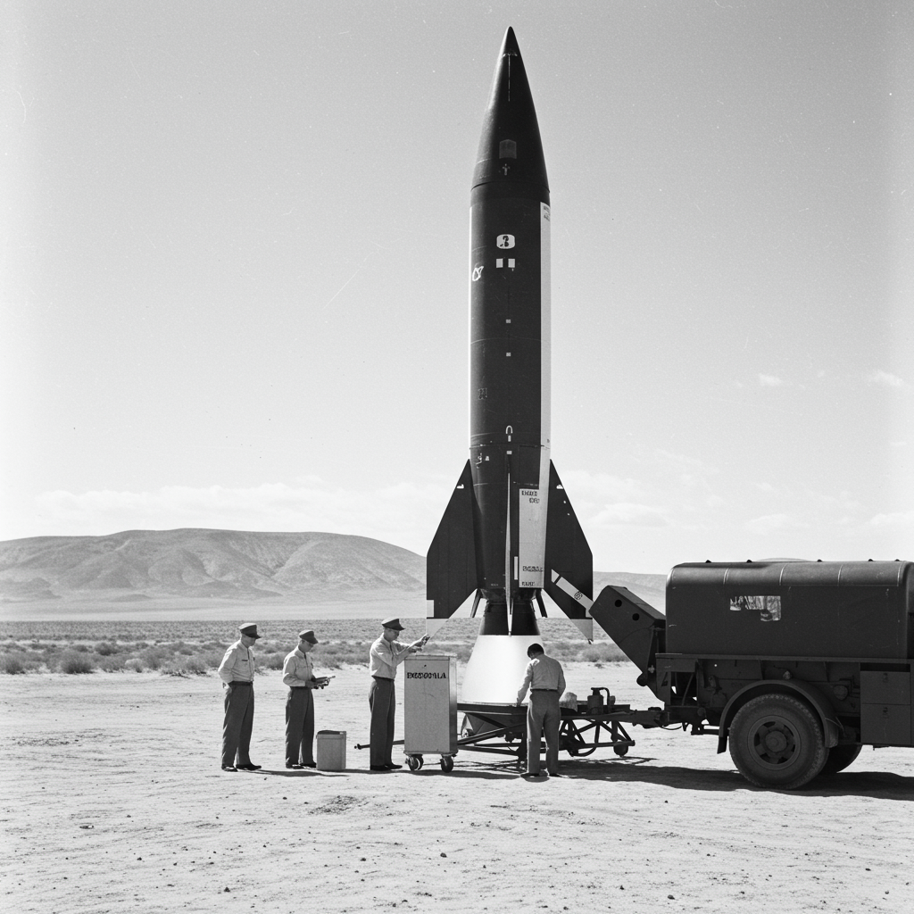

Fruit Flies (Drosophila melanogaster)
Ficha Técnica
Nombre común: Moscas de la fruta
Especie: Drosophila melanogaster
Tipo de misión: Biológica
Primera misión registrada: V-2 (EE.UU., 1947)
Objetivo: Estudiar los efectos de la radiación cósmica y microgravedad en organismos vivos.
Detalles de Misión
Las moscas de la fruta fueron los primeros animales enviados al espacio exterior por Estados Unidos a bordo de un cohete V-2 el 20 de febrero de 1947. Esta misión pionera tenía como objetivo analizar los efectos de la exposición a la radiación cósmica fuera de la atmósfera terrestre.
Las moscas viajaron a una altitud de aproximadamente 109 km, superando la línea de Kármán. La cápsula fue recuperada con éxito y las muestras pudieron ser estudiadas a su retorno.
Impacto Científico
Esta misión marcó el inicio de los vuelos biológicos y sentó las bases para futuras misiones con mamíferos y humanos. Drosophila sigue siendo hasta hoy un modelo clave en estudios genéticos y biológicos espaciales.
Regresar al Archivo X